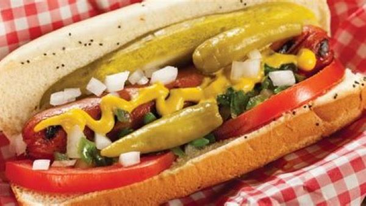
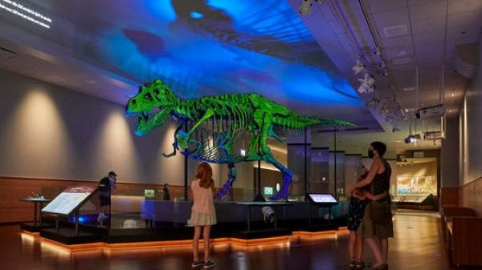
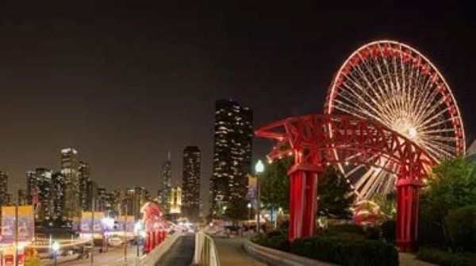
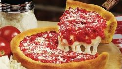
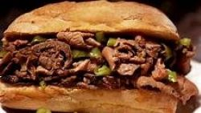

FOOD...

MUSEUMS...

...AND OTHER ATTRACTIONS
Food
Vienna Beef
One of the many places to get a Chicago style hot dog. A traditional Chicago hot dog features mustard, sweet relish, diced tomato, diced white onion, celery salt, sport peppers, and a pickle spear and is served on a poppy seed bun.
Gino's East or Giordano's

Two of the best places to get deep dish pizzas. This Chicago specialy consists of chewy dough topped with cheese; toppings, including a lot of meat; a generous portion of sauce; and grated parmesan cheese, in that order.
Portillo's

Known for hot dogs; italian sausage sandwiches; and Italian beef, a sandwich stuffed with thin strips of flavorful, spicy beef often served with hot and sweet peppers and a bowl of beef juice for dipping.
Where to try it:
Garrett Popcorn Shops
This traditional Chicago popcorn mixes carmel corn and cheese popcorn for a sweet and salty flavor combination.
Museums
Field Museum of Natural History
The Field Museum of Natural History features over 30 permanent exhibits on wildlife, ancient cultures, pre-Columbian America, geology, fossils, and more. Home to Sue the T. rex.
Museum of Science and Industry
The museum features numerous interactive experiences, from flight and coal mine simulations to a recreated Chicago street circa 1910. Home to the U-505 German submarine.
Art Institute of Chicago
The institute holds more than 30,000 pieces in its collection. From pop art to medieval armor, there's something for everyone to enjoy. Home to Seurat's A Sunday on La Grane Jatte.
Shedd Aquarium
The Shedd Aquarium features seven permanent exhibits, such as the Amazon and the Caribbean. Fan favorites include penguins, sea lions, otters, and sharks.
Adler Planetarium
The Adler Planetarium features exhibits on the moon, solar system, and the history of the universe. The domed Grainger Sky Theater creates an immersive viewing experience. Home to the Gemini 12 capsule.